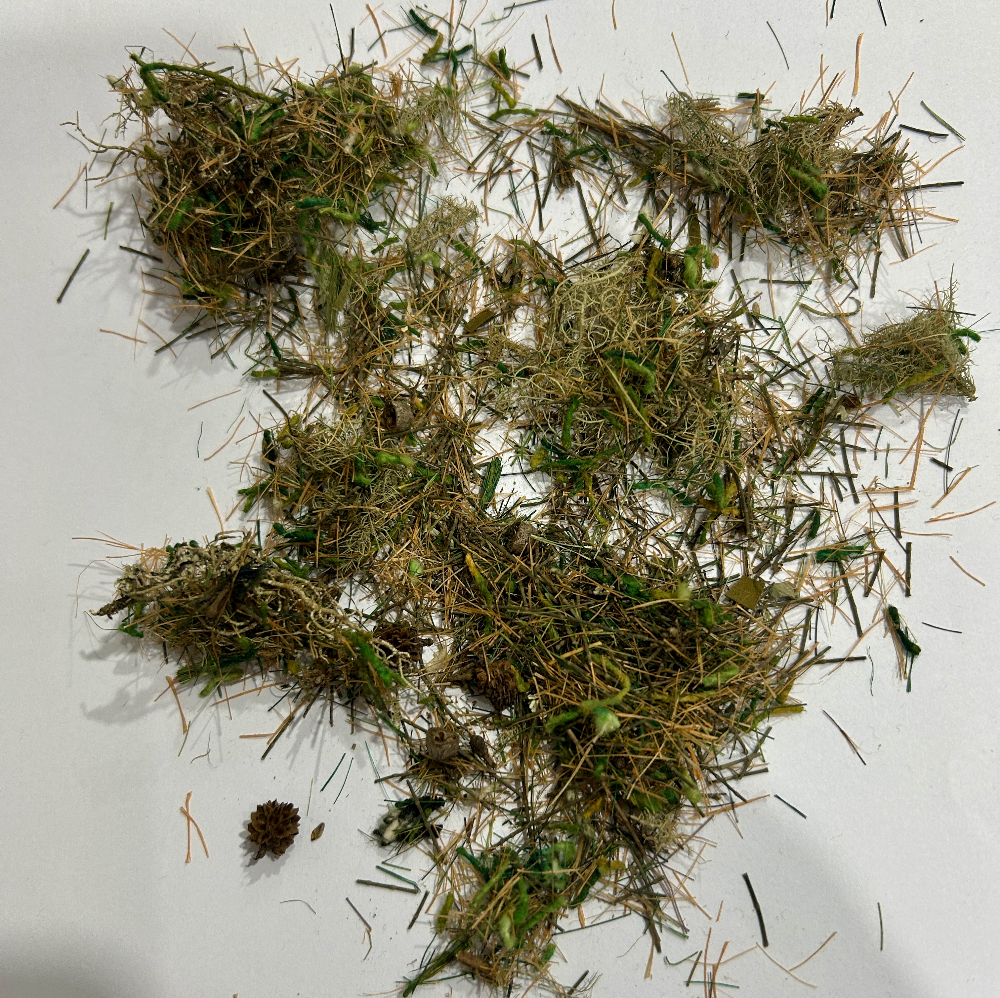

Preservação de musgo para maquetes
Os musgos são pequenas plantas que costumam formar tapetes verdes e densos em ambientes úmidos e sombreados, como troncos de árvores, rochas e solos de florestas.
São também bastante conhecidos pelo uso em presépios, tradicionalmente montados na época do Natal para representar o nascimento de Jesus na manjedoura de Belém.
No ferromodelismo, pequenos pedaços de musgo podem produzir um excelente efeito na representação da vegetação, principalmente em florestas, terrenos úmidos, junto a pedras e nas margens dos trilhos.
Entretanto, por se tratar de material vegetal natural, o musgo sem tratamento tende a secar, perder a cor e esfarelar com o passar do tempo. Por isso, antes de utilizá-lo na maquete, recomenda-se realizar um processo de preservação.

Como preservar
- Limpar cuidadosamente o musgo, retirando terra, insetos e outros detritos.
- Se necessário, lavar delicadamente em água corrente e deixar escorrer.
- Preparar uma solução com 1 parte de glicerina vegetal para 2 partes de água quente. A água quente facilita a diluição da glicerina.
- Opcionalmente, acrescentar 1 colher de sopa de álcool para cada litro da solução.
- Para reforçar a tonalidade, podem ser acrescentadas algumas gotas de corante verde. Na foto ao lado não foi aplicado corante no mugo.
- Colocar o musgo na solução, deixando-o completamente submerso.
- Manter o musgo de molho durante 4 a 7 dias, virando-o diariamente para favorecer uma absorção uniforme.
- Retirar o musgo da solução e deixar escorrer bem.
- Espalhar o material sobre papel-toalha ou jornal e deixar secar à sombra durante aproximadamente 2 a 4 dias.
- Depois de seco, o musgo estará pronto para ser utilizado na decoração da maquete.
Aplicação na maquete
Recomenda-se utilizar pequenos pedaços distribuídos em diferentes pontos, evitando grandes áreas contínuas. Essa aplicação irregular proporciona um aspecto mais natural à vegetação e permite combinar o musgo com outros materiais utilizados na representação de árvores, arbustos, gramíneas e vegetação rasteira.
← Voltar ao índice